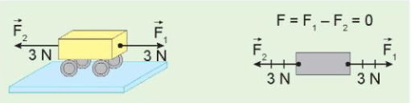
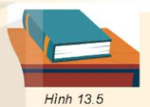
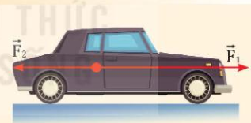
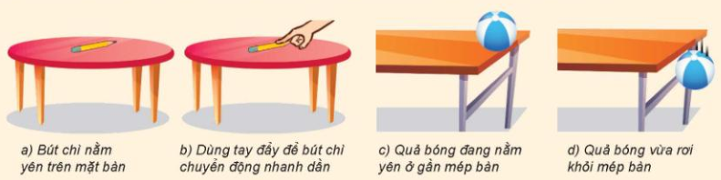
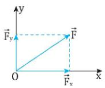
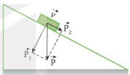
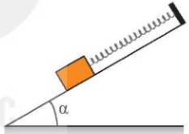

HOẠT ĐỘNG 1:
KHỞI ĐỘNG
(5 phút)
|
Mục tiêu: Tạo tình huống có vấn đề về các lực cân bằng và không cân bằng.
Nội dung: Quan sát hình ảnh và dự đoán.
Sản phẩm: Câu trả lời của học sinh.
Tổ chức thực hiện:
- GV chiếu Hình 13.4 (sgk) về hai lực cân bằng.
- GV đặt câu hỏi: "Quan sát quyển sách đang nằm yên trên mặt bàn. Có những lực nào tác dụng lên quyển sách? Các lực này có cân bằng không? Vì sao?"
- HS quan sát, dự đoán.
- GV dẫn dắt vào bài: "Để trả lời, chúng ta cùng tìm hiểu phần II. Các lực cân bằng và không cân bằng."

Hình 13.4. Hai lực cân bằng
|
HOẠT ĐỘNG 2.2:
TÌM HIỂU VỀ CÁC LỰC CÂN BẰNG
VÀ KHÔNG CÂN BẰNG
(12 phút)
|
a. Mục tiêu:
- HS nêu được khái niệm và nhận biết được các lực cân bằng, không cân bằng trong các tình huống.
- Phân tích được trạng thái của vật (đứng yên hoặc thay đổi vận tốc) dưới tác dụng của hệ lực.
- Hình thành khái niệm các lực cân bằng, không cân bằng.
- Năng lực số:
- 1.3.NC1a: HS thao tác được thông tin và dữ liệu về các ví dụ lực trong thực tế để tổ chức, lưu trữ và truy xuất dễ dàng hơn trên thiết bị số.
- 3.1.NC1a: Áp dụng được các cách tạo và chỉnh sửa nội dung số (như sơ đồ tư duy hoặc bảng so sánh) để thể hiện sự phân biệt giữa lực cân bằng và không cân bằng.
- Năng lực AI:
- NLc: Biết cách sử dụng câu lệnh (prompt) phù hợp để nhờ trợ lý AI hỗ trợ lấy thêm ví dụ thực tế hoặc giải thích nhanh các tình huống phức tạp về cân bằng lực.
- NLb: Thể hiện trách nhiệm và tính minh bạch khi trích dẫn nguồn hình ảnh hoặc thông tin được hỗ trợ bởi AI.
b. Nội dung:
- HS nghiên cứu SGK và thảo luận nhóm đôi để hoàn thành Phiếu học tập (PHT) số 4.
- Nội dung tìm hiểu bao gồm:
- Định nghĩa lực cân bằng: Tổng hợp lực tác dụng lên vật bằng 0 (\(\vec{F} = \vec{F}_1 + \vec{F}_2 + \dots = \vec{0}\)), vật đứng yên hoặc ở trạng thái cân bằng.
- Định nghĩa lực không cân bằng: Hợp lực của các lực khác 0, làm thay đổi vận tốc của vật.
- Phân tích các ví dụ: Quyển sách nằm yên trên bàn; dùng tay đẩy bút chì chuyển động nhanh dần; quả bóng rơi khỏi mép bàn.
c. Sản phẩm:
II. Các lực cân bằng và không cân bằng
1. Các lực cân bằng: Xét trường hợp vật đứng yên dưới tác dụng của nhiều lực. Khi đó, tổng hợp lực tác dụng lên vật bằng 0. Ta nói các lực tác dụng lên vật là các lực cân bằng và vật ở trạng thái cân bằng:
\[ \vec{F} = \vec{F}_1 + \vec{F}_2 + \vec{F}_3 + \dots = \vec{0} \]
2. Các lực không cân bằng:
- Khi hợp lực của các lực khác 0 thì các lực này không cân bằng.
- Hợp lực hay lực không cân bằng này tác dụng vào một vật có thể làm thay đổi vận tốc của vật.
d. Tổ chức thực hiện:
Bước 1: GV chuyển giao nhiệm vụ học tập
- GV đặt vấn đề về trạng thái đứng yên hoặc chuyển động của vật trong thực tế và yêu cầu HS đọc SGK để tìm hiểu khái niệm.
- GV phát PHT số 4 và yêu cầu HS sử dụng thiết bị số để tìm thêm hình ảnh minh họa cho các lực này.
- Hướng dẫn AI (NLc): GV gợi ý prompt mẫu: "Hãy đóng vai chuyên gia vật lí, đưa ra 3 ví dụ về lực cân bằng và 3 ví dụ về lực không cân bằng trong giao thông đường bộ" để HS mở rộng tư duy.
- GV yêu cầu HS quan sát Hình 13.5, 13.6, 13.7 và trả lời câu hỏi trong SGK.
Bước 2: HS thực hiện nhiệm vụ học tập
- HS làm việc nhóm đôi, thảo luận các câu hỏi trong PHT số 4.
- HS sử dụng điện thoại/máy tính để thu thập hình ảnh thực tế (ví dụ: đèn chùm treo đứng yên, xe đang tăng tốc), sau đó sắp xếp vào các thư mục lưu trữ số để dễ dàng truy xuất (1.3.NC1a).
- HS thiết kế một bảng so sánh nhanh trên nền tảng số (3.1.NC1a).
- Tư duy AI: Nhóm sử dụng trợ lý ảo để kiểm chứng lại các ví dụ nhóm đã chọn xem có thực sự là lực cân bằng hay không.
Bước 3: Báo cáo kết quả hoạt động và thảo luận
- Đại diện nhóm trình bày đáp án PHT 4: Giải thích tại sao quyển sách nằm yên (do P và N cân bằng).
- Nhóm trình chiếu các ví dụ thực tế đã sưu tầm được từ môi trường số.
- Đáp án:
- 1.a. Các lực tác dụng lên quyển sách gồm: Trọng lực \(\vec{P}\), phản lực \(\vec{N}\) của bàn.
- 1.b. Các lực này có cân bằng vì quyển sách nằm yên.
- 2. Ta thấy: \(\vec{F}_1 \uparrow\downarrow \vec{F}_2 \rightarrow F = |F_1 - F_2| = 100\) N. Và \(\vec{F}\) có chiều hướng về phía trước.
- 3.a. Tình huống có hợp lực khác 0 là: Dùng tay đẩy để bút chì chuyển động nhanh dần; Quả bóng vừa rơi khỏi mép bàn.
- 3.b. Dùng tay đẩy để bút chì chuyển động nhanh dần: độ lớn vận tốc sẽ tăng dần, hướng chuyển động về phía trước. Quả bóng vừa rơi khỏi mép bàn: độ lớn vận tốc tăng dần, hướng chuyển động theo phương thẳng đứng hướng xuống.
- Nhóm trình chiếu các ví dụ thực tế đã sưu tầm được từ Internet hoặc do AI gợi ý.
- Các nhóm khác thảo luận về sự thay đổi vận tốc khi có lực không cân bằng tác dụng (xe nhanh dần, bóng rơi).
- NLb: HS báo cáo rõ ràng nguồn gốc của dữ liệu số và các câu trả lời lấy từ AI.
Bước 4: Đánh giá kết quả, thực hiện nhiệm vụ học tập
- GV đánh giá hoạt động qua bảng nhóm và tính chính xác của các ví dụ.
- GV chốt kiến thức: Lực cân bằng giữ vật đứng yên hoặc chuyển động thẳng đều; lực không cân bằng làm biến đổi chuyển động.
- GV lưu ý HS về việc bảo vệ dữ liệu cá nhân khi làm việc trên môi trường số (4.2.NC1a).

Hình 13.5. Quyển sách nằm yên trên mặt bàn

Hình 13.6. Ô tô chịu hai lực không cân bằng

Hình 13.7. Ví dụ về các lực cân bằng và không cân bằng
|
HOẠT ĐỘNG 2.3:
TÌM HIỂU VỀ PHƯƠNG PHÁP
PHÂN TÍCH LỰC THÀNH CÁC
LỰC THÀNH PHẦN VUÔNG GÓC
(13 phút)
|
a. Mục tiêu:
- Phát biểu được định nghĩa phân tích lực và quy tắc phân tích một lực thành hai lực thành phần vuông góc.
- Dùng hình vẽ phân tích được một lực thành các lực thành phần vuông góc trong các trường hợp thực tế (như vật trên mặt phẳng nghiêng).
- Năng lực số:
- 3.1.NC1a: Áp dụng được các cách tạo và chỉnh sửa nội dung số (sử dụng phần mềm đồ họa hoặc công cụ vẽ trong PowerPoint/Canva) để biểu diễn các vectơ lực thành phần.
- 5.2.NC1b: Áp dụng được các công cụ số (phần mềm mô phỏng PhET hoặc các thí nghiệm ảo) để kiểm chứng tác dụng của các lực thành phần sau khi phân tích.
- 1.1.NC1b: Áp dụng được kĩ thuật tìm kiếm để lấy được các hình ảnh thực tế về ứng dụng của phân tích lực (như phân tích trọng lực trên cầu, dốc) trong môi trường số.
- Năng lực AI:
- NLc: Biết cách thiết lập câu lệnh (prompt) phù hợp để nhờ trợ lý AI (ChatGPT/Gemini) hỗ trợ giải thích ý nghĩa vật lí của việc phân tích lực theo hai phương vuông góc.
- NLb: Thể hiện sự minh bạch và trách nhiệm; sử dụng thông tin từ AI làm tư liệu tham khảo và thực hiện trích dẫn nguồn học liệu số minh bạch khi xây dựng nội dung báo cáo.
- NLa: Nhận thức được rằng AI hỗ trợ tính toán các lực thành phần khi thiết kế công trình, nhưng con người (kĩ sư) mới là chủ thể kiểm tra và chịu trách nhiệm về các yếu tố rủi ro thực tế.
b. Nội dung:
- HS nghiên cứu mục III SGK để nắm vững định nghĩa và quy tắc phân tích lực.
- HS thảo luận nhóm đôi hoàn thành Phiếu học tập (PHT) số 5 nhằm giải quyết các tình huống: Phân tích lực kéo F của xe và trọng lực P của người trên dốc thành các thành phần vuông góc.
- Sử dụng công cụ số để vẽ sơ đồ phân tích lực và quan sát mô phỏng.
- GV yêu cầu HS đọc SGK mục III, nêu khái niệm phân tích lực.
c. Sản phẩm:
III. Phân tích lực
Phân tích lực: Là phép thay thế một lực thành hai lực thành phần có tác dụng giống hệt lực ấy.
1. Quy tắc:
- Thường ta phân tích lực thành 2 lực vuông góc với nhau, để lực thành phần này không có tác dụng nào theo phương của lực thành phần kia.
- Phân tích lực là phép làm ngược lại với tổng hợp lực, nhưng chỉ áp dụng vào trường hợp 2 lực thành phần vuông góc.
2. Chú ý: Chỉ khi xác định được một lực có tác dụng theo hai phương vuông góc nào thì mới phân tích lực theo hai phương vuông góc đó.
d. Tổ chức thực hiện:
Bước 1: GV chuyển giao nhiệm vụ học tập
- GV đặt vấn đề: "Để tính ma sát của xe khi lên dốc, ta cần biết phân lực vuông góc, nhưng trọng lực lại hướng thẳng đứng. Vậy làm sao để xác định lực theo phương vuông góc đó?"
- GV yêu cầu HS tìm kiếm video minh họa việc phân tích trọng lực trên mặt phẳng nghiêng (1.1.NC1b).
- Hướng dẫn AI (NLc): GV gợi ý prompt: "Hãy đóng vai gia sư Vật lí, giải thích tại sao khi phân tích lực trên mặt phẳng nghiêng, người ta thường chọn một trục song song và một trục vuông góc với mặt phẳng đó".
- GV yêu cầu HS quan sát Hình 13.8, 13.9, 13.10 và trả lời câu hỏi trong SGK.
Bước 2: HS thực hiện nhiệm vụ học tập
- HS thảo luận nhóm đôi nghiên cứu SGK và hoàn thành PHT số 5.
- HS sử dụng phần mềm mô phỏng để thay đổi góc nghiêng của dốc, quan sát sự thay đổi độ lớn của các thành phần \(P_1, P_2\) (5.2.NC1b).
- Nhóm trưởng điều phối thành viên dùng công cụ vẽ để thiết kế sơ đồ phân tích lực kĩ thuật số (3.1.NC1a).
Bước 3: Báo cáo kết quả hoạt động và thảo luận
Bước 4: Đánh giá kết quả, thực hiện nhiệm vụ học tập
- GV tổng kết, đánh giá bài làm của HS trên cả bản giấy và bản số.
- GV chốt kiến thức: Chỉ phân tích lực khi xác định được tác dụng của nó theo hai phương vuông góc cụ thể.
- Quản lí dữ liệu (Mã 1.3.NC1a): GV nhắc HS lưu trữ các sơ đồ số và ghi chú từ AI vào thư mục học tập của lớp trên Google Drive để phục vụ ôn tập.

Hình 13.8. Phân tích lực theo hai trục vuông góc

Hình 13.9. Phân tích trọng lực trên mặt phẳng nghiêng

Hình 13.10. Vật được giữ yên trên mặt phẳng nghiêng
|
HOẠT ĐỘNG 3:
LUYỆN TẬP – TRÒ CHƠI
"CHINH PHỤC KIẾN THỨC"
(10 phút)
|
a. Mục tiêu:
- Hệ thống hóa kiến thức về hợp lực, quy tắc hình bình hành, lực cân bằng và phương pháp phân tích lực thành các thành phần vuông góc.
- Vận dụng thành thạo các quy tắc hình học và công thức toán học để giải các bài tập định lượng về lực.
- Vận dụng quy tắc phân tích lực để giải bài tập.
- Năng lực số:
- 3.1.NC1a: Áp dụng được các cách tạo và chỉnh sửa nội dung số (như sơ đồ tư duy số, tệp đồ họa) để thể hiện sự hiểu biết về quy tắc tổng hợp và phân tích lực.
- 2.1.NC1a: Sử dụng được nhiều công nghệ số để tương tác trong quá trình thi đua giải bài tập giữa các nhóm.
- 5.1.NC1b: Tự áp dụng được các giải pháp khác nhau để xử lí các vấn đề kĩ thuật phát sinh khi tham gia các trò chơi học tập trên môi trường số.
- Năng lực AI:
- NLc: Biết cách thiết lập các câu lệnh (prompt) phù hợp để nhờ trợ lý AI hỗ trợ giải thích các bước logic toán học khi tính toán độ lớn hợp lực hoặc giải thích các thuật ngữ chuyên sâu phát sinh.
- NLb: Thể hiện sự minh bạch và trách nhiệm; sử dụng AI để kiểm chứng kết quả nhưng phải tự thực hiện tính toán và trích dẫn nguồn học liệu từ AI một cách minh bạch.
b. Nội dung:
- HS thực hiện hệ thống hóa kiến thức bài học bằng sơ đồ tư duy số (sử dụng Canva, MindMeister hoặc PowerPoint).
- Tham gia trò chơi thi đua giải bài tập (ví dụ: trò chơi "Tảng băng trôi" hoặc trên nền tảng Quizizz/Kahoot).
- Giải bài tập ví dụ SGK (như bài toán vật trên mặt phẳng nghiêng).
c. Sản phẩm:
- Sản phẩm học tập: Câu trả lời chính xác cho các bài tập trong phiếu luyện tập hoặc trên ứng dụng số.
- Sản phẩm số: Sơ đồ tư duy hệ thống kiến thức (quy tắc hình bình hành, điều kiện cân bằng lực \(\vec{F}_1 + \vec{F}_2 + \dots = \vec{0}\)) được trình bày sinh động.
d. Tổ chức thực hiện:
Bước 1: GV chuyển giao nhiệm vụ học tập
- GV tóm lược lại các nội dung chính của bài học bằng một sơ đồ mẫu.
- GV yêu cầu các nhóm truy cập vào nền tảng trò chơi trực tuyến (Quizizz/Kahoot) hoặc bảng tương tác để bắt đầu phân thi đấu luyện tập (2.1.NC1a).
- Hướng dẫn AI (NLc): GV gợi ý prompt: "Hãy giải thích từng bước logic để tính độ lớn hợp lực của hai lực có độ lớn 20N hợp với nhau góc 60 độ bằng định lí hàm cos".
- Câu hỏi trò chơi:
Câu 1: Một chất điểm chịu tác dụng của một lực F có độ lớn là 20N. Nếu hai lực thành phần của lực đó vuông góc với nhau có độ lớn lần lượt là F₁ = 12N và F₂ thì F₂ bằng: A. 8N. B. 16N. C. 32N. D. 20N.
Câu 2: Hai lực khác phương F₁ và F₂ có độ lớn F₁ = F₂ = 20N, góc tạo bởi hai lực này là 60°. Hợp lực của hai lực này có độ lớn là: A. 14,1N. B. \(20\sqrt{3}\)N. C. 17,3N. D. 20N.
Câu 3: Một con nhện đang treo mình dưới một sợi tơ theo phương thẳng đứng thì bị một cơn gió thổi theo phương ngang làm dây treo lệch đi so với phương thẳng đứng một góc 30°. Biết trọng lượng của con nhện là P = 0,1N. Xác định độ lớn của lực mà gió tác dụng lên con nhện ở vị trí cân bằng trong Hình 13.2. ĐS: \(F = \frac{\sqrt{3}}{30}\) N.
- GV yêu cầu HS đọc và tóm tắt Bài tập ví dụ (sgk tr.59).
- HS tóm tắt: Vật có khối lượng \(m = 5\) kg đặt trên mặt phẳng nghiêng góc \(\alpha = 30^\circ\). Tính các thành phần của trọng lực.
- GV gọi 1 HS lên bảng giải, các HS khác làm vào vở.
- HS giải:
\[ P_x = P \cdot \sin\alpha = m \cdot g \cdot \sin 30^\circ = 5 \cdot 9.8 \cdot 0.5 = 24.5 \text{ N} \]
\[ P_y = P \cdot \cos\alpha = m \cdot g \cdot \cos 30^\circ = 5 \cdot 9.8 \cdot \frac{\sqrt{3}}{2} \approx 42.4 \text{ N} \]
Bước 2: HS thực hiện nhiệm vụ học tập
- HS thảo luận nhóm đôi hoặc nhóm 4 để giải các bài tập tính toán về độ lớn hợp lực và phân tích lực.
- HS thực hiện thiết kế sơ đồ tư duy số để tổng hợp quy tắc hình bình hành và các công thức liên quan (3.1.NC1a).
- GV quan sát, hỗ trợ HS xử lí các sự cố về kết nối mạng hoặc lỗi ứng dụng trong quá trình làm bài (5.1.NC1b).
- HS dùng AI để đối chiếu phương pháp giải bài toán "con nhện" nhưng phải tự trình bày lại theo tư duy của nhóm (NLb).
Bước 3: Báo cáo kết quả hoạt động và thảo luận
- Hệ thống tự động hiển thị bảng xếp hạng kết quả của các nhóm.
- Đại diện một nhóm trình bày cách giải bài tập tự luận (ví dụ câu 3 về con nhện) và chiếu sơ đồ tư duy của nhóm lên màn hình lớp.
- Đáp án:
- Câu 1: B
- Câu 2: B
- Câu 3: Viết phương trình cân bằng lực: \(\vec{F} + \vec{P} + \vec{T} = 0\). Tổng hợp lực theo quy tắc hình bình hành. Khi con nhện và sợi tơ cân bằng như hình vẽ: Ta có: \(\tan 30° = \frac{F}{P} \Rightarrow F = P \cdot \tan 30° \approx 0,058\) N.
- HS các nhóm khác thảo luận, nhận xét và bổ sung dựa trên kết quả hiển thị trên môi trường số (2.5.NC1b).
Bước 4: Đánh giá kết quả, thực hiện nhiệm vụ học tập
- GV nhận xét, chính xác hóa kết quả bài tập ví dụ về mặt phẳng nghiêng.
- GV đánh giá kết quả dựa trên độ chính xác và tốc độ hoàn thành của các nhóm.
- GV chốt kiến thức: Chuẩn hóa các lỗi thường gặp (nhầm lẫn giữa sin/cos, vẽ sai điểm đặt vectơ) và lưu ý tầm quan trọng của việc kiểm soát kết quả từ AI (NLa).
- GV hướng dẫn HS lưu trữ các sản phẩm số vào thư mục học tập của lớp trên Google Drive để phục vụ ôn tập (Mã 1.3.NC1a).
|
HOẠT ĐỘNG 4:
VẬN DỤNG
(5 phút)
|
a. Mục tiêu:
- HS tự vận dụng, tìm tòi mở rộng các kiến thức đã học về tổng hợp, phân tích và cân bằng lực để giải quyết hoặc giải thích các tình huống thực tiễn.
- Phát triển khả năng tương tác với cộng đồng thông qua các môi trường số.
- Vận dụng kiến thức vào thực tế và giao nhiệm vụ về nhà.
- Năng lực số:
- 3.1.NC1a: Áp dụng được các cách tạo và chỉnh sửa nội dung số (video, ảnh, infographic) để giải thích các hiện tượng vật lí.
- 2.2.NC1a: Chia sẻ dữ liệu và nội dung học tập thông qua nhiều công cụ số phù hợp (như Padlet, Facebook nhóm lớp, Zalo).
- 5.4.NC1c: Đề xuất được các cơ hội khác nhau để phát triển bản thân thông qua việc cập nhật các giải pháp công nghệ số trong nghiên cứu kĩ thuật.
- Năng lực AI:
- NLc: Biết cách thiết lập câu lệnh (prompt) phù hợp để nhờ AI hỗ trợ mô phỏng các kịch bản góc kéo tàu khác nhau nhằm tìm ra hợp lực tối ưu.
- NLb: Thể hiện sự minh bạch và trách nhiệm; thực hiện trích dẫn nguồn khi sử dụng hình ảnh hoặc dữ liệu do AI tạo ra để xây dựng sản phẩm vận dụng.
- NLa: Xác định được vai trò quyết định của con người trong việc kiểm soát và chịu trách nhiệm về an toàn kĩ thuật khi áp dụng các tính toán từ hệ thống AI vào thực tế.
b. Nội dung:
- Nhiệm vụ 1: Hoàn thiện giải pháp kĩ thuật cho sự cố tàu Ever Given (đã nêu ở Hoạt động 1). HS sử dụng kiến thức về tổng hợp lực để vẽ sơ đồ các lực kéo của tàu cứu hộ sao cho hợp lực đạt giá trị tối ưu.
- Nhiệm vụ 2: Tìm hiểu và ghi hình/chụp ảnh các ví dụ về cặp lực cân bằng hoặc không cân bằng trong thực tế địa phương (ví dụ: dây cáp treo đèn đường, lực kéo trong trò chơi kéo co, hoặc phân tích lực trên cầu dây văng).
- Nhiệm vụ 3: Chuẩn bị bài mới: Tìm hiểu trước về Định luật I Newton qua các video thí nghiệm lịch sử của Galilei trên Internet.
c. Sản phẩm:
- Sơ đồ lực: Bản vẽ kĩ thuật (hoặc file đồ họa số) biểu diễn các vectơ lực kéo tàu Ever Given đảm bảo quy tắc hình bình hành.
- Sản phẩm truyền thông số: Video clip ngắn hoặc Infographic thuyết minh về một ứng dụng của phân tích lực/cân bằng lực trong đời sống.
- Bài làm được lưu giữ trong vở ghi hoặc trên hệ thống quản lí học tập (LMS) của lớp.
- Nhật kí AI: Danh sách các prompt đã dùng để tham khảo ý tưởng từ AI và các nguồn trích dẫn học liệu số.
d. Tổ chức thực hiện:
Bước 1: GV chuyển giao nhiệm vụ học tập
- GV giao nhiệm vụ thông qua phiếu học tập số 6 hoặc thông báo trên nhóm học tập trực tuyến.
- Yêu cầu: "Các nhóm hãy thiết kế một sản phẩm số giải thích giải pháp kéo tàu Ever Given dựa trên kiến thức tổng hợp lực đã học".
- GV cung cấp các link tham khảo về kĩ thuật hàng hải để HS tự học (5.4.NC1c).
- Hướng dẫn AI (NLc): GV gợi ý prompt: "Đóng vai kĩ sư cơ học, hãy gợi ý cấu trúc một báo cáo phân tích lực kéo tối ưu để giải cứu tàu mắc cạn bằng quy tắc hình bình hành".
- GV đặt câu hỏi: "Trong thực tế, khi kéo một vật nặng trên mặt phẳng nghiêng, người ta thường đặt vật như thế nào để giảm lực kéo? Tại sao?"
Bước 2: HS thực hiện nhiệm vụ học tập
- HS làm việc nhóm ngoài giờ học, thảo luận qua các nền tảng trực tuyến.
- HS sử dụng các công cụ như Canva hoặc PowerPoint để tạo nội dung số, vẽ các vectơ lực chính xác theo quy tắc hình bình hành (3.1.NC1a).
- HS thực hiện tìm hiểu thực tế, chụp ảnh các cặp lực cân bằng tại địa phương và tổ chức lưu trữ dữ liệu nhóm (1.3.NC1a).
- Thực hành AI (NLb): HS dùng AI để đối chiếu kịch bản góc kéo nhưng phải tự kiểm chứng độ chính xác vật lí.
- HS vận dụng kiến thức: Đặt vật nằm theo phương song song với mặt phẳng nghiêng để giảm thành phần \(P_x\) của trọng lực, từ đó giảm lực kéo cần thiết.
Bước 3: Báo cáo kết quả hoạt động và thảo luận
- Các nhóm chia sẻ link sản phẩm số hoặc video lên Padlet của lớp để các bạn cùng xem và nhận xét (2.2.NC1a).
- HS tham gia thảo luận, đặt câu hỏi phản biện về tính khả thi của các phương án tổng hợp lực kéo mà nhóm bạn đề xuất (2.5.NC1b).
Bước 4: Đánh giá kết quả, thực hiện nhiệm vụ học tập
- GV đánh giá sản phẩm vào tiết học tiếp theo dựa trên các tiêu chí: tính chính xác vật lí, tính thẩm mỹ của sản phẩm số và khả năng vận dụng kiến thức.
- GV tổng kết lại tầm quan trọng của việc phối hợp lực trong kĩ thuật và đời sống.
- GV giao nhiệm vụ về nhà:
- Nhiệm vụ năng lực số (1.1.NC1c): Tìm và lọc 2 nguồn về Tổng hợp và phân tích lực. Cân bằng lực; dùng AI gợi ý từ khóa/giải thích ban đầu, đối chiếu SGK và ghi nguồn.
- Nhiệm vụ trực tuyến: Tìm hiểu thêm trên internet về tổng hợp và phân tích lực để hoàn thiện nội dung học tập.
- Chốt kiến thức (NLa): GV nhấn mạnh: AI có thể tính toán hàng nghìn kịch bản lực, nhưng kĩ sư con người phải là người lựa chọn giải pháp an toàn nhất.
- GV nhận xét, kết thúc tiết 2.
|